Έστω ο πίνακας
Ma = 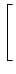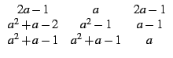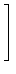
a) Για ποιες τιμές του a, είναι ο Ma αντιστρέψιμος;
Προσδιορίστε την τάξη του όταν δεν είναι αντιστρέψιμος.
b) Υπολογίστε τον αντίστροφο του πίνακα M2.
Απάντηση :
Εισάγουμε τον πίνακα πληκτρολογώντας:
M:=[[2a-1,a,2a-1],[a^2+a-2,a^2-1,a-1],[a^2+a-1,a^2+a-1,a]]
Για να υπολογίσουμε την ορίζουσα του M, πληκτρολογούμε:
det(M)
και παίρνουμε:
2*a^4+-2*a^3+-2*a^2+2*a
Για να βρούμε τον αντίστροφο του M πληκτρολογούμε:
inv(M)
και παίρνουμε:
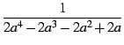

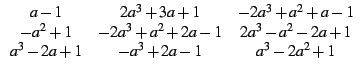
![$\displaystyle \left.\vphantom{
\begin{array}{ccc}
a-1 & 2a^3+3a+1 & -2a^3+a^2+a...
...+2a-1 & 2a^3-a^2-2a+1\\
a^3-2a+1 & -a^3+2a-1 & a^3-2a^2+1
\end{array}}\right]$](img44.png)
solve(2a^4-2*a^3-2*a^2+2*a,a)
και βλέπουμε πως:
[-1,0,1]
ο πίνακας είναι αντιστρέψιμος εάν
a [- 1, 0, 1]
Στο ίδιο συμπέρασμα καταλήγουμε παραγοντοποιώντας τον παρανομαστή:
factor(2a^4-2*a^3-2*a^2+2*a)
διότι το αποτέλεσμα είναι:
2*(a+1)*a*(a-1)^2
Για να βρούμε την τάξη του πίνακα όταν δεν είναι αντιστρέψιμος πληκτρολογούμε:
[rank(subst(M,a,-1)),rank(subst(M,a,0)),rank(subst(M,a,1))]
και βλεπουμε πως είναι:
[2, 2, 1]
Για να βρούμε τώρα τον αντίστροφο του πίνακα M2 πληκτρολογούμε:
inv(subst(M,a,2))
και παίρνουμε:
A = 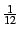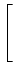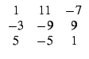
![$ \left.\vphantom{
\begin{array}{ccc}
1 & 11 & -7\\
-3 & -9 & 9\\
5 & -5 & 1
\end{array}}\right]$](img49.png)
Επισήμανση: για να μην κάνουμε αντικαταστάσεις μπορούμε να
ορίσουμε τον πίνακα M σαν συνάρτηση του a, γράφοντας:
M(a):=[[2a-1,a,2a-1],[a^2+a-2,a^2-1,a-1],[a^2+a-1,a^2+a-1,a]]
Για να βρούμε τώρα τον αντίστροφο του πίνακα M2
πληκτρολογούμε απλά: inv(M(2)).
Έστω ο πίνακας
A =  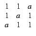
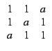
Για ποιές τιμές του a, διαγωνοποιείται;
Απάντηση:
Ορίζουμε τον πίνακα πληκτρολογώντας:
A:=[[1,1,a],[1,a,1],[a,1,1]]
Για να δούμε για ποιες τιμές του a διαγωνοποιείται ο πίνακας,
βρίσκουμε την μορφή Jordan του A πληκτρολογώντας:
egvl(A)
Από το αποτέλεσμα:
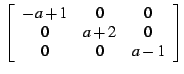
που γράφεται και:
[[-a+1,0,0],[0,a+2,0],[0,0,a-1]]
βλέπουμε πως άν a 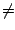 1 υπάρχουν 3 διακριτές ιδιοτιμές
- a + 1, a + 2, a - 1, ενώ
άν a = 1 υπάρχει μία διπλή ιδιοτιμή ( = 0) και μία απλή ιδιοτιμή ( = 3).
Στην συνέχεια βρίσκουμε τον πίνακα μετάβασης από τα ιδιοδιανύσματα,
πληκτρολογώντας:
egv(A)
Τα ιδιοδιανύσματα είναι οι στήλες του πίνακα:
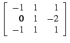
που γράφεται και:
[[1,1,1],[0,1,-2],[-1,1,1]]
Μπορούμε επίσης να έχουμε ταυτόχρονα και τον πίνακα μετάβασης και την
μορφή Jordan του πίνακα A πληκτρολογώντας:
jordan(A)
Το αποτέλεσμα είναι μία λίστα δύο πινάκων [P, B]
όπου ο P είναι ο πίνακας μετάβασης και
B = P-1AP:
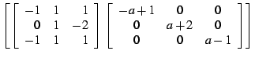
που γράφεται και:
[[[1,1,1],[0,1,-2],[-1,1,1]],[[-a+1,0,0],[0,a+2,0],[0,0,a-1]]]
Παρατηρούμε ότι εκτελώντας: a:=1 και στην συνέχεια jordan(A)
ομαδοποιούνται οι διπλές ιδιοτιμές και παίρνουμε:
που γράφεται και:
[[[1,-3,0],[1,0,-3],[1,3,3]],[[3,0,0],[0,0,0],[0,0,0]]]
Βλέπουμε λοιπόν πως ο A διαγωνοποιείται για οποιαδήποτε τιμή
και αν έχει το a και
B = P-1AP.
![$\displaystyle \tt\left[ \left[
\begin{array}{rrr}
1 & -3 & 0\\
1 & 0 & -3 ...
...n{array}{ccc}
3 & 0 & 0\\
0 & 0 & 0\\
0 & 0 & 0
\end{array}\right]
\right]$](img57.png)